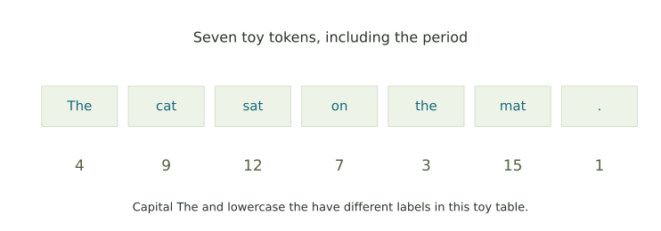
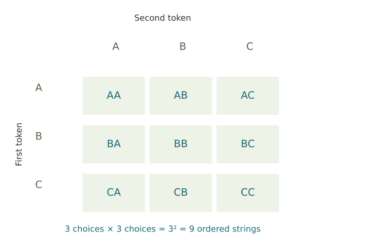

Text, labels, and a growing sequence
Count toy tokens, encode their order, count short strings, and follow a supplied continuation rule.
A small tokenizer
Use the sentence The cat sat on the mat. Our toy tokenizer makes seven pieces, including the final period. Capital “The” and lowercase “the” are distinct tokens in this table.

| Token | The | cat | sat | on | the | mat | . |
|---|---|---|---|---|---|---|---|
| ID | 4 | 9 | 12 | 7 | 3 | 15 | 1 |
For these exercises, use exactly the pieces shown in the table.
1. Count the pieces
Count the punctuation piece too.
2. Encode the sentence in order
Use The → 4, cat → 9, sat → 12, on → 7, the → 3, mat → 15, and period → 1. Keep the sentence order rather than sorting the numbers.
3. Count possible ordered strings
A vocabulary has 16 tokens, with IDs 0 through 15. The IDs run from 0 to 15, giving sixteen choices.
For two positions, there are 16 choices for the first and 16 for the second, giving 16 × 16 = 16² possibilities. Repeated tokens are allowed, so every ordered pair counts.

4. Follow a toy continuation rule
Use the table to find the token that follows each piece of text.
| Current text | Append this token |
|---|---|
| The cat | sat |
| The cat sat | on |
| The cat sat on | the |
| The cat sat on the | mat |
5. Track a separate prompt’s length
A prompt currently contains 5 tokens, and one new token is appended at each step.
Following the sequence
Each appended token changes the text used for the next lookup. The sequence grows by one token at each step.
Further reading: Hugging Face on tokenizers and token IDs.